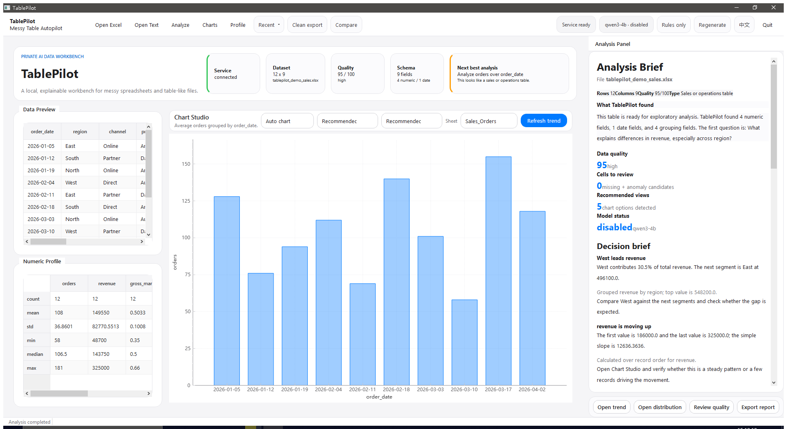
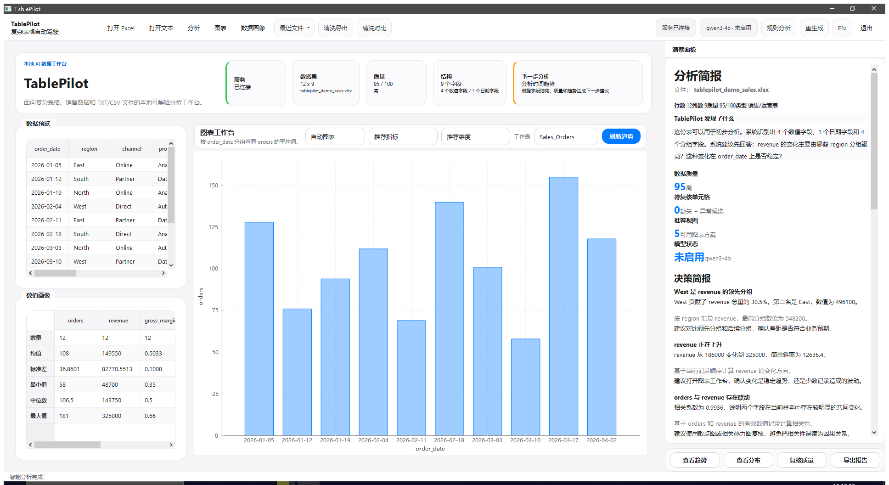
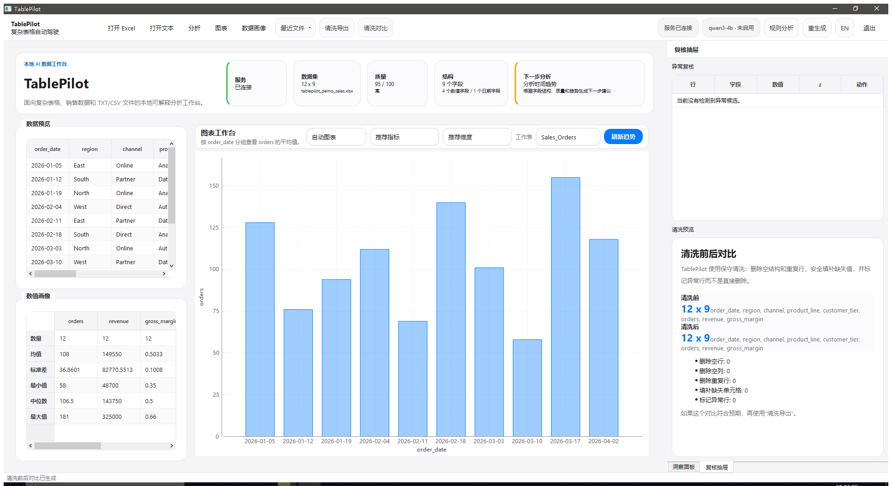

Table profiling
profile_dataset / profile_table produce a schema- and quality-oriented profile per table, reachable at POST /api/analyze or /api/analyze-upload.

LOCAL-FIRST · MESSY-TABLE ANALYSIS
TablePilot is a local-first workbench for messy Excel, CSV, and TXT files. A Python FastAPI service (v0.5.0) profiles your tables, previews and applies cleaning, and generates HTML & Markdown reports — optionally narrated by a local model. A Qt/C++ desktop shell drives the same endpoints with a real keyboard-and-table UI.
本地优先的脏表工作台。对 Excel / CSV / TXT 做画像、清洗预览与结果、分析方案与可解释报告； Python FastAPI 服务（v0.5.0）+ Qt/C++ 桌面壳。默认仅本地文件，不上云。
Not a cloud BI SaaS. Files are read from disk and processed
locally. The local_ai path points at a local model (e.g.
ollama) — nothing leaves your machine unless you configure it to.
Every feature is an HTTP endpoint — /api/datasets, /api/analyze, /api/clean-preview-upload, /api/report/html, /api/agent/query. The desktop shell and the Swagger UI drive exactly the same surface.
profile_dataset / profile_table produce a schema- and quality-oriented profile per table, reachable at POST /api/analyze or /api/analyze-upload.
/api/clean-preview-upload shows what would change; /api/clean-upload returns the cleaned CSV or XLSX. Compare before/after directly.
/api/report/markdown (plain text) and /api/report/html (HTML) generate copy-pasteable, evidence-grounded artifacts.
/api/agent/query answers a free-text question over a table; pass local_ai: true for the optional local-model enhancement.
/api/session/export snapshots the current analysis session as JSON. GET /health covers liveness and container probes.
真实桌面端截图：销售样例总览、中文洞察面板，以及清洗前后对比。



Local files → FastAPI analysis service (v0.5.0) → Qt/C++ desktop shell and reports. Every capability is an endpoint; nothing is uploaded unless you explicitly configure it.